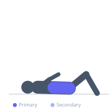
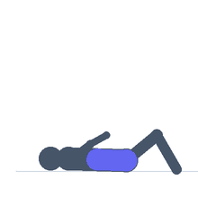

Exercise guide / Seated Machine Crunch — Oblique Rotation
Seated Machine Crunch — Oblique Rotation
A variation of the seated machine crunch in which the torso rotates slightly to one side during the crunch, targeting the oblique muscles on the side toward which the rotation occurs. By crunching and rotating simultaneously, the internal and external obliques are recruited in addition to the rectus abdominis. Used in abdominal training programs to develop rotational core strength alongside the standard flexion-dominant crunch.
Primary muscles
internal oblique
external oblique
rectus abdominis
Secondary muscles
transverse abdominis
Equipment
No Equipment (Bodyweight)


Starting position
- Sit in the crunch machine with the chest pad positioned correctly. Begin in the upright starting position with the spine tall.
Setup
- Adjust the machine for your torso length. Set a weight that allows full range with slow, controlled movement.
Steps
- Step 1: Begin upright in the machine. Initiate the crunch by flexing the spine downward and simultaneously rotating the torso to the right.
- Step 2: At the bottom of the crunch, the torso is both flexed and rotated to the right.
- Step 3: Return to the upright starting position. On the next repetition, rotate to the left.
- Step 4: Alternate sides with each repetition, or perform all reps on one side before switching.
Coaching cues
- Bring the right elbow toward the left knee and the left elbow toward the right knee on alternating reps
- The rotation comes from the thorax, not the hips
- Squeeze the oblique hard at the bottom of each rotated crunch
Breathing
- Exhale forcefully during the crunch and rotation. Inhale as you return to the start.
Range of motion
- Full flexion with maximum comfortable rotation at the bottom.
Tempo
- 2s crunch and rotate, 1s hold, 3s slow return.
Common mistakes
- Using the arms and chest pad to push rather than the core to pull
- Rotating from the hips rather than the thoracic spine
- Rushing through the rotation — the oblique contraction requires a controlled squeeze at the end range
Safety
- If the machine does not allow rotational movement, do not force it — this variation may not be possible on all designs
- If neck pain occurs during the crunch, reduce the range or change to a supported crunch variation
Training
- endurance: 12–20 reps
- endurance: 2–4 sets
- Rest: {'endurance': 60}